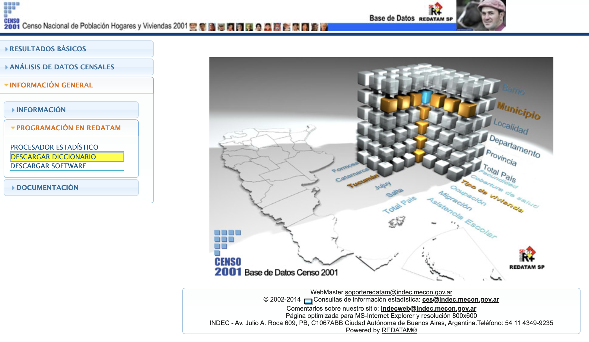

Capítulo 3 Los censos de población modernos
Este capítulo tiene como propósito presentar a los censos de población modernos (1960-2010), llevados a cabo por el Instituto Nacional de Estadísticas y Censos (INDEC), para mostrar sus características, posibilidades y limitaciones en tanto fuente para el estudio de la estructura de clases en Argentina.
Se abordan las siguientes preguntas:
- ¿Cuáles son las principales características de los censos modernos?
- ¿Qué elementos presentan para el estudio de la estructura de clases argentina?
- ¿Cuáles son sus limitaciones? ¿Qué cambios han presentado a lo largo del tiempo?
- ¿Cuáles son las principales variables que debemos considerar en el análisis de clase?
- ¿Qué formas existen para acceder a los microdatos?
- ¿Qué ventajas presenta cada forma de acceso?
Al completar este capítulo se espera que les lectores puedan:
- Identificar las principales características, ventajas y desventajas en el uso de los censos de población modernos para el estudio de la estructura de clases en Argentina.
- Aprender a localizar la información necesaria, incorporando distintos métodos de acceso a la misma (descarga de microdatos desde distintos sitios y uso de paquete
ipumsrparaR). - Navegar los microdatos de los censos de población en
RStudioy realizar exploraciones preliminares.
Para una mayor comprensión del capítulo recomendamos la lectura de los siguientes documentos:
De Grande, P. (2016): “El formato Redatam”. Estudios demográficos y urbanos, Vol. 31, Núm. 3 (93), pp. 811-832. Link.
Observatorio Latinoamericano de Censos de Población OLAC.
Robert McCaa, Albert Esteve, Steven Ruggles y Matthew Sobek (2004): “La integración de los microdatos censales de América Latina: el proyecto IPUMS-América Latina”, Estudios Demográficos y Urbanos, 20(1), 37-70.
Sacco, N. (2017): “¿Cierran los números con la gente adentro?”. Estudios Demográficos y Urbanos, 32(96), 631-667. doi: 10.24201/edu.v32i3.1648.
Torrado, S. (1992):‘Para leer “Estructura social de la Argentina”’ en Jorrat, J. R. & Sautu, R. (Eds.) Después de Germani: Exploraciones sobre estructura social de la Argentina, Paidós.
3.1 Clases sociales y censos de población
¿Qué pueden decirnos los censos de población sobre la estructura de clases? Las estadísticas oficiales en la Argentina nunca ofrecieron tabulados con la variable clase social, o en todo caso, por grupos-socioeconómicos o socio-ocupacionales. Una gran parte de los estudios sobre estructura social en base a datos censales que se han realizado en la Argentina han utilizado o bien la variable ocupación o bien algún cruce de las “características económicas” disponibles en cada censo para construir clases sociales.
De acuerdo a los datos de los censos 1869, 1895, 1914 y 1947 pero también utilizando prácticamente todo lo disponible en el Sistema Estadístico Nacional de la época, Germani (1987) agrupó categorías ocupacionales según criterios teóricos y empíricos provenientes de la teoría de la modernización en su análisis de los procesos de movilidad y cambio social de la Argentina moderna. Después de Germani, los estudios de Torrado (1992, 2003) abordaron nuevamente el análisis de la evolución del volumen y estructura de las clases sociales, en base a los censos de 1947, 1960, 1970 y 1980, esta vez de acuerdo a una conceptualización proveniente de un enfoque histórico-estructural.
La disponibilidad de otras fuentes adicionales a los censos para el estudio de la desigualdad social fue escasa en Argentina durante buena parte del Siglo XX, salvo a partir del último tercio. Los censos de población fueron el principal corpus que tanto Germani como Torrado y otros especialistas encontraron para responder sus preguntas, lo que les permitió abordar el estudio de la estratificación social en base a datos ocupaciones desagregados, cubriendo todo el país.
3.1.1 Antecedentes
Como se abordó en el capítulo 2, la clase social, como marco teórico, representa un enfoque complementario de la estratificación social al incorporar las relaciones sociales de propiedad y control sobre factores productivos al análisis de las desigualdades de recursos económicos, políticos y sociales (Kerbo, 2003). A pesar de su elaboración relativamente lejana en el tiempo, la aplicación de esta conceptualización en distintas investigaciones, por ejemplo las de Torrado (1992), mostró una significativa capacidad interpretativa, sobre todo si se tienen en cuenta los problemas y limitaciones que posee el estudio de la desigualdad social en relación a la alta dependencia de la información empírica disponible, casi siempre incompatible para ser utilizada por marcos teóricos y metodológicos ajenos a los cuales fue construida.
Esta orientación —predominante— que utilizó censos de población para el estudio de clases en Argentina se ubica dentro de lo que Crompton (2008) denominó “enfoque ocupacional-agregado” de la estratificación social. Pensado para el particular contexto latinoamericano de disponibilidad de información, en este sentido, se diferencia con respecto a otros desarrollos teóricos más recientes, por ejemplo, de Wright (1997, 2005) o Goldthorpe (1995), donde, por la carencia presupuestaria fundamentamente, gran parte del esfuerzo conceptual estuvo dirigido a resolver el problema del dato a utilizar, es decir, en cómo desplegar la teoría con fuentes secundarias y no en base a datos ad-hoc (primarios) para una teoría específica.
La elección de este enfoque se debió, además, a que si bien la preocupación sobre el análisis y medición de las clases sociales en la Argentina en base a estadísticas oficiales se inició desde la propia llegada de la sociología como disciplina académica, su desarrollo no alcanzó ni la expansión ni la recepción social que se esperaban y a pesar de que durante el fin del Siglo XX las ciencias sociales asistieron a un renovado debate sobre la estructura social (Crompton, 2008; Kerbo, 2003; Martínez, 2005), el amplio disenso teórico acerca de esta cuestión no reavivó la pregunta sobre las posibilidades analíticas de las estadísticas oficiales para el estudio de las clases sociales. Durante un largo período la Argentina careció de estudios sobre estructura social de largo aliento, de alcance nacional y de espíritu comparativo y la pregunta sobre la estratificación social tuvo menos respuestas empíricas de las que se esperaban.
El programa de investigación de Torrado (1992), corresponde la excepción a esta situación quien abordó, 37 años después de la publicación de Germani, nuevamente, el análisis de la evolución del volumen y estructura de las clases sociales, esta vez, de acuerdo a una conceptualización proveniente del materialismo histórico, en base a los censos de 1947, 1960, 1970 y 1980. Como Germani, el estudio de Torrado efectuó una profunda evaluación de las fuentes y los datos disponibles en los censos —véase por ejemplo Torrado y Orsatti (1985) y Torrado y Rofman (1988)–, realizando ajustes a las estimaciones del volumen total de clases sociales de Germani para 1947.
3.1.2 Practicidad
Las razones de incluir a estos censos de población son múltiples. El argumento principal es que son, dado el contexto de producción y oferta de estadísticas oficiales en Argentina, prácticamente la única fuente del Sistema Estadístico Nacional (SEN) que permite estudiar, de un modo agregado, la desigualdad social.
Más allá de la imposibilidad de recurrir a instrumentos ad-hoc, limitación debida sobre todo a las restricciones presupuestarias de investigación en Argentina, o, en su defecto, recurrir a la información provista por la EPH, cualquier encuesta de hogares disponible, sea oficial, académica o privada, posee distintos obstáculos para el estudio global y a largo plazo sobre la estructura de clases.
Las encuestas a hogares –que están, en su gran mayoría, limitadas a los grandes centros urbanos– podrían pensarse como las fuentes primordiales para el estudio de la desigualdad social. Su continua actualización permitiría enriquecer el conocimiento del perfil de la estratificación social en base a datos ocupacionales desagregados y en los distintos niveles de ingresos, ya que relevan información sobre variables no contempladas en los censos, vinculadas principalmente a los mercados de trabajo y a las diversas formas de ingreso monetario.
Sin embargo, aquellos aspectos relativos a la desigualdad social no son cabalmente contempladas por estas fuentes, o en todo caso, si integran algunas de sus dimensiones, no lo hacen con la magnitud, tanto teórica como empírica, con la cual lo llevan adelante los censos. La posibilidad de análisis desagregados es notoriamente más permisible en los censos que en las encuestas, a nivel nacional y/o de agregados regionales.
En otro orden de razones, los datos censales utilizados pueden dar continuidad a la explotación del tipo de fuente que fue materia prima de estudios previos, cuyos límites empírico-temporales finalizan hacia el censo de 1980. A a la vez, los censos de 1991, 2001 y 2010 conllevan un corpus conceptual común (con importantes diferencias conceptuales) cuyos límites y alcances son compartidos.
3.2 Censos de población modernos. Características principales
Los censos de población modernos, aquellos llevados a cabo en 1960, 1970, 1980, 1991, 2001, de acuerdo a la definición de Guisti (2007) —siguiendo esta caracterización, podemos también agregar el de 2010— constituyen, casi de forma similar a la EPH, un programa nacional de producción sistemática y permanente de indicadores sociales, económicos y demográficos que lleva a cabo el INDEC, y que fundamentalmente, permite conocer las características sociodemográficas y socioeconómicas de la población de acuerdo a estándares internacionales. Para más información sobre estos aspectos de los censos, se recomienda visitar el sitio web del Observatorio Latinoamericano de Censos de Población OLAC.
3.2.1 Las características económicas en los censos de población
Las preguntas referidas a las variables económicas de la población tuvieron un acrecentamiento importante a lo largo de los censos de población (Minujín, 1987, p. 49). Desde una simple pregunta abierta en 1869 se pasó, ya para 1980, a una batería de seis preguntas que permitirían una captación más amplia de la población económicamente activa (PEA), al mismo tiempo que se complejizó la estructura de las preguntas, así como su instrucción y codificación. En la Tabla 3.1 se observa el conjunto de información sobre las características económicas de la población que se relevaron a lo largo de los censos modernos, quienes se basaron (exceptuado al censo de 1947) en las recomendaciones internacionales para la conceptualización de las variables económicas siguiendo el enfoque de fuerza de trabajo, que sugiere el registro de la ocupación actual en un periodo breve y reciente. La cobertura temática cubrió una amplia gama de variables.
Variables |
1947 |
1960 |
1970 |
1980 |
1991 |
2001 |
2010 |
Condición de actividad |
X |
X |
X |
X |
X |
X |
X |
Categoría ocupacional |
X |
X |
X |
X |
X |
X |
X |
Profesión u oficio/ Ocupación |
X |
X |
X |
X |
X |
X |
X |
Ocupación secundaria |
|
X |
|
|
|
|
|
Rama de actividad |
X |
|
X |
X |
X |
X |
X |
Dedicación del establecimiento |
|
|
|
X |
|
|
|
Tamaño del establecimiento |
|
|
|
X |
X |
X |
X |
Jurisdicción |
|
|
|
|
X |
X |
X |
Ubicación del lugar de trabajo |
|
|
|
X |
|
|
|
Descuento jubilatorio |
|
|
|
|
X |
X |
X |
Mayor ingreso del hogar |
|
|
X |
|
|
|
|
Propietarios |
|
|
|
|
|
|
|
Giusti (2007, p. 224) | |||||||
Esta perspectiva no está exenta de críticas, ya que se le suele señalar que fue delineada de acuerdo al modelo de economías centrales capitalistas de alta industrialización, con ocupaciones estables y por ello, no adecuada para países en desarrollo, es decir, imposibilitada de captar ciertas franjas laborales (por ejemplo, economías agrícolas, de subsistencia, trabajo esporádico, discontinuo). Kritz (1987) señaló que los supuestos de este enfoque asumen que: i) es exógena la oferta de mano de obra (estabilidad de las tasas de participación dependientes de atributos asociados a la situación demográfica); ii) la demanda depende de agentes económicos diferentes de los oferentes; iii) homogeneidad del mercado de trabajo (no segmentación); iv) la situación ocupacional es bipolar (supuestos que no se darían en la Argentina).
De acuerdo a lo esquematizado en la Tabla 3.2, las variables, sus sistemas clasificatorios y los universos de observación presentan divergencias entre los censos de 1980 a 2010.
Variables |
CEN-80 |
CEN-91 |
CEN-01 |
CEN-10 |
Condición de Actividad |
Actividad ejercida en la semana anterior a la enumeración |
Actividad ejercida en la semana anterior a la enumeración |
Actividad ejercida en la semana anterior a la enumeración |
Actividad ejercida en la semana anterior a la enumeración |
Categoría de Ocupación |
Obrero o empleado/ Patrón/Empleado en servicio doméstico/Trabajador por cuenta propia/Trabajador familiar sin remuneración fija |
Obrero o empleado/ Patrón/Empleado en servicio doméstico/Trabajador por cuenta propia/Trabajador familiar sin remuneración fija |
Obrero o empleado/ Patrón/Trabajador por cuenta propia/Trabajador familiar |
Obrero o empleado/ Patrón/Trabajador por cuenta propia/Trabajador familiar |
Rama de Actividad |
Pregunta abierta |
Pregunta abierta |
Pregunta abierta |
Pregunta abierta |
Tamaño |
Pregunta cerrada con 2 alternativas (hasta 5/ más de 5) |
Pregunta cerrada con 2 alternativas (hasta 5/ más de 5) |
Pregunta cerrada con 3 alternativas (hasta 5/ entre 6 y 39/ más de 39) |
Pregunta cerrada con 4 alternativas (hasta 5/ entre 6 a 25/ de 26 a 100/ más de 100) |
Elaboración propia en base a censos nacionales de población. | ||||
Se volverá sobre este tema en el Capítulo 4.
3.3 Censos modernos: acceso diferencial
En el estudio de la realidad social y económica en Argentina los censos de población cumplen funciones esenciales para el funcionamiento de los sistemas estadísticos nacionales, la implementación de servicios gubernamentales, la asignación de recursos públicos, la inversión privada y la investigación académica. Como se mencionó previamente, el gran valor socio-histórico de los censos se debe a su vez al hecho de que fueron prácticamente la única fuente de datos secundaria sobre cuestiones sociales durante mucho tiempo en Argentina. Además de sus conocidas bondades para poder examinar los fenómenos a nivel de áreas geográficas menores o para subpoblaciones pequeñas, los censos han sido utilizados habitualmente para el análisis comparado entre países o de un mismo país a lo largo del tiempo.
El INDEC ha modificado las herramientas que ofrece a usuarios para el acceso a las bases de datos oficiales de los censos de población modernos. Hace relativamente unos pocos años que es posible acceder a microdatos y bases completas en línea de algunos de los censos modernos: el de 2001 y 2010, a través de sitio web del INDEC. Sin embargo, estas bases se publican en distintos formatos, y prácticamente sin una descripción de los metadatos, las variables corregidas, o un análisis de calidad, que quedan, en su gran parte, a criterio de los usuarios. En Argentina, los investigadores tienen que evaluar por su cuenta la utilidad de estos datos.
La formas (cambiantes) de publicar del INDEC son un aviso para los profesionales e investigadores con respecto a las herramientas disponibles para extraer datos públicos. En esta sección del, revisamo las diferentes formas de extraer o construir datos de las bases de datos del INDEC, al menos, conocidas. Las siguientes líneas proporcionarán instrucciones sobre cómo utilizar diferentes herramientas para la extracción de datos públicos.
En esta parte del capítulo se explora como:
- Adquirir datos de los censos de población modernos en Argentina, a través de diferentes alternativas:
- Generar y analizar datos de la muestra de microdatos de uso público del censo decenal de Argentina (PUMS) del INDEC y/o IPUMS con
ipumsr.
Los lenguajes de programación como R, aunque menos fáciles de usar y con una interfaz de usuario más disuasiva, poseen la capacidad de reproducir análisis repetidamente con conjuntos de datos muy diferentes, y tienen un gran impacto en la productividad, al tiempo que ofrecen algunas de las ventajas del código: control de versión y ciencia abierta. Por el contrario, las herramientas de apuntar y hacer clic con el mouse para la extracción, el análisis o la visualización de datos son populares y más fáciles de usar, pero no son reproducibles ni escalables. Si los usuarios están realizando un trabajo que no es tan complejo o no se basa en una gran cantidad de datos, no es necesario utilizar un entorno de programación. De cualquier manera, el objetivo del uso de estas herramientas debe ser minimizar la posibilidad de un error y maximizar la posibilidad de detectar un error y…“terminar las cosas”.
3.3.1 Modos de acceso
Las formas de acceso a los datos censales en Argentina son diversas. Las modalidades posibles conocidas, poseen ventajas y desventajas, que serán detalladas más adelante. A raíz de la reciente circulación de bases de datos “no oficiales” publicadas por usuarixs anónimos antes que por el INDEC, es importante debatir las modalidades de acceso a los censos, tanto desde la perspectiva de los usuarios como la de los propios institutos oficiales. La magnitud de la difusión de microdatos censales para el desarrollo y la investigación, con garantías adecuadas para proteger la privacidad y garantizar la confidencialidad, es sistemáticamente señalada por la Dirección de Población de Naciones Unidas, dado su potencial para ampliar significativamente los usos de la información.
La realización de censos de población no se limita a las extensas fases de organización, implementación del operativo de campo, posterior evaluación y difusión de cifras oficiales definitivas. Dentro de las tareas del INDEC en tanto rector del SEN así como ejecutor de los censos de población, se deben desarrollar y difundir los “productos censales”: tabulaciones básicas, mapas e informes temáticos, entre otros. Dentro del amplio conjunto de potenciales usuarios de los datos censales, existe un subconjunto —a veces denominado de “usuarios calificados”— cuya demanda de información no se ve satisfecha a partir de los productos de información predefinidos por el INDEC, por ende, requiere del acceso a los microdatos censales. Además, en una época de creciente uso de la información social para la toma de decisiones y de mayor disponibilidad de herramientas para su análisis, este tipo de usuarios —así como sus necesidades de información— se encuentra en aumento.
Asimismo, la disponibilidad de microdatos para el procesamiento por parte de les usuaries calificados puede reducir sensiblemente la demanda potencial de pedidos de datos al INDEC, liberando recursos que pueden ser de utilidad en otras áreas de trabajo.
¿Cómo se accede al procesamiento de datos censales en Argentina? ¿Qué tipo de respuestas ofrece el INDEC en esta materia? ¿Cuáles son las alternativas? ¿Cuál es el panorama y cuáles son las perspectivas a futuro?
3.3.2 Es lo que hay
Más allá de los tabulados disponibles y publicaciones con resultados discriminados temáticamente, existen, al menos, cuatro modalidades de acceso a los datos censales en Argentina, a través de:
- el uso de herramientas de procesamiento en línea;
- la descarga de los microdatos censales disponibles en el sitios web del INDEC;
- la descarga de una muestra de microdatos censales del proyecto IPUMS International (IPUMS-I de la Universidad de Minnesota);
- la solicitud directa de microdatos o tabulados al INDEC y
- métodos no oficiales.
Mientras que en las primeras tres se trata de recursos disponibles en internet, la ante-última demanda diferentes tipos de procedimiento para dar trámite a la solicitud de datos, que pueden implicar la presencia física en el INDEC e incluso el cobro de haberes por el servicio. Asimismo, mientras que la mayoría de estas modalidades de difusión y liberación de datos censales son definidas y gestionadas por el INDEC, la opción de utilizar los datos disponibles en IPUMS-I requiere aceptar una serie de condiciones dispuestas por la Universidad de Minnesota (registración, cita, etc.). Se describe a continuación cada caso en particular.
3.3.3 Procesamiento de datos en línea2
Las herramientas de procesamiento de datos censales en línea han significado un gran avance para los usuarios interesados en producir rápidamente un conjunto de tabulados básicos de interés. Esta estrategia consiste en la posibilidad de acceder remotamente a las bases datos y a un conjunto de variables censales, definir qué variables se quieren utilizar en el análisis descriptivo y su desagregación territorial, y la posterior descarga de los tabulados en distintos formatos.
El procesamiento de los censos en línea ha sido la modalidad más utilizada por el INDEC durante las últimas dos rondas censales para hacer públicos sus datos y contemplar las distintas demandas de información por parte de usuarios. Para ello ha sido fundamental el apoyo técnico e informático brindado por el Centro Latinoamericano de Demografía (CELADE) a través del software REDATAM (Acrónimo de REcuperación de DATos para Áreas pequeñas por Microcomputador) y su desarrollo de aplicaciones web para la difusión de la información REDATAM on-line.
REDATAM no es un producto argentino, fue desarrollado por el CELADE y tuvo su primera versión para DOS en 1987. Dado que en aquel momento en Latinoamérica era muy caro y complejo procesar censos, muchos países comenzaron a usarlo gratuitamente, lo que fue de gran ayuda para los institutos de estadística y los usuarios de la región. El producto evolucionó, agregando de a poco regiones y usuarios. Incluso, en países de África y Asia fue un éxito.
La manera más sencilla de acceder a los censos disponibles para procesar con REDATAM en línea es a través del sitio web de REDATAM 7, en donde aparecen los vínculos de acceso a los censos disponibles, según país y año del censo (durante los últimos años, el uso del procesador REDATAM en línea se ha expandido hacia otras regiones del mundo, más allá de América Latina, y en otras fuentes de datos, como las encuestas de hogares y los registros vitales).
Las principales fortalezas del REDATAM en línea son su carácter “amigable” para usuarios con distintos niveles de experiencia. La curva de aprendizaje para adquirir los conocimientos básicos para programar en REDATAM es bastante corta. Se trata de un lenguaje de programación propio y específico, que suele ser de uso menos popular que el de otros paquetes y que se caracteriza por la gran rapidez para el procesamiento de bases de datos con un número alto de registros.
Asimismo, tiene la ventaja de incluir una sección de documentación, en donde por ejemplo se puede encontrar el cuestionario censal y el manual del empadronador, y otros metadatos; y también provee una herramienta para la generación de mapas temáticos. Cuenta con el apoyo técnico del CELADE que además ofrece periódicamente talleres para usuarios de datos y para formar técnicos en la generación de bases en formato REDATAM y desarrollo de aplicaciones web. Entre las principales limitaciones del REDATAM en línea se puede mencionar que muchas veces se difunde un conjunto incompleto de variables censales y que el tipo de análisis estadístico que se puede obtener se encuentra restringido y es relativamente básico (análisis de frecuencias simples, tablas cruzadas, conteos y promedios, indicadores predefinidos), y es poco amigable guardar consultas a la base para reproducirlas.
Si bien los censos de 2001 y 2010 cuentan con esta herramienta de consulta interactiva de datos, no se incluyen los censos de rondas anteriores.
Se puede acceder a los siguientes censos de Argentina a través de la web REDATAM:
REDATAM no solo ofrece herramientas de procesamiento en línea sino también la descarga del software para el procesamiento de microdatos censales en formato propio, ampliando el abanico de posibilidades de análisis, tanto en términos de variables disponibles y tipo de procesamiento estadístico, como por el hecho de poder acceder a bases de datos de censos “históricos”. La dificultad en este sentido está dada por el hecho de que se requiere acceder a los microdatos y para ello no están del todo claro los procedimientos vigentes o los metadatos de las bases disponibles. Se volverá sobre este punto.
Actualmente REDATAM puede correr como servidor para procesar datos en internet. Lamentablemente este producto corre solo en servidores Windows (que en la actualidad dejó de ser un estándar para estos servicios). Claramente este producto se está quedando en el tiempo y los formatos en los que se manejan los datos no son muy cómodos. Si bien REDATAM es gratuito, el código fuente con el que fue construido no es de libre acceso, quiere decir, se puede usar pero no se puede ver o proponer mejoras. Esto limita su desarrollo al equipo actual de programación y no permite a las comunidades de software libre auditar, proponer o desarrollar cambios en el producto.
3.3.4 Descarga directa de microdatos
Para un conjunto reducido de censos el INDEC optó por habilitar la descarga libre y gratuita de los microdatos censales, disponibles en su sitio web. El INDEC publicó los microdatos (aunque no completos) de sus últimos dos censos (2001 y 2010) para su descarga automática en formato ASCII.
La descarga directa de los microdatos censales desde el sitio web oficial del INDEC tiene claramente una serie de ventajas para el analista de datos, en tanto permite trabajar con el set bastante completo de variables utilizadas en el cuestionario censal (salvo eliminación expresa por parte de la INDEC) y realizar diferentes procesamientos estadísticos que permitan atender sus necesidades específicas de información. Llamativamente, para el caso del censo 2001, la variable ocupación, no está publicada por parte del INDEC.
Uno de los aspectos a considerar por parte del INDEC, para quienes se inclinan por esta opción, es la protección de la confidencialidad de los datos ofrecidos por las personas que fueron censadas, en tanto la información almacenada en los microdatos censales puede llevar a la identificación de las mismas, particularmente si se trabaja con información de áreas muy pequeñas del territorio. También existe la posibilidad de convertir los diccionarios de formato REDATAM a otros formatos, lo cual puede llegar a simplificar enormemente tareas de procesamiento de datos.
Tanto para el caso del 2001 como el 2010, sólo hace falta hacer ‘click’ en “Descargar Diccionario” para bajarse la base de microdatos, tal como se muestra en las imágenes y trabajarla de forma local, con REDATAM o, mediante su transformación, con su software de preferencia.
Gráfico 3.1: Descargar diccionario
Gráfico 3.2: Descargar diccionario2

3.3.4.1 Transformación del diccionario original
En base estas limitaciones del REDATAM, un investigador argentino, Pablo De Grande, desarrolló y liberó una herramienta de software para extraer la base completa (a nivel de personas, anonimizada) de cualquier censo hecho con REDATAM.
En su blog Discontinuos se puede acceder al software Converser Redatam y explorar su modo de uso. Una vez bajados los diccionarios desde la web del INDEC, se pueden extraer los datos y guardarlos en un formato más adecuado para procesamientos estadísticos, por ejemplo, en ASCII.
3.3.5 IPUMS-I
Sólo cinco años después de la creación del CELADE, este organismo comenzó la Operación de Muestras de Censos (OMUECE), la más ambiciosa muestra internacional de censos del siglo XX. Gracias ello el archivo de microdatos censales de América Latina es uno los más completos de cualquier región del mundo (para más información ver artículos de McCaa y Jaspers-Faijer (2000) y McCaa, Esteve, Ruggles y Sobek (2004). Este proyecto fue el antecedente directo de las bases disponibles hoy en el IPUMS-I. Este espacio ofrece una colección, inventario, preservación de datos y documentación referida a muestras de censos en el mundo, con información armonizada, es decir, comparable entre países, de manera gratuita. Tiene una documentación bastante exhaustiva y facilita de esta forma la investigación comparativa. Una de las desventajas del proyecto IPUMS es que no posee mecanismos de validación con el INDEC y a veces resultan más confiables datos de los INDEC que IPUMS en algunas variables.
Para Argentina, contamos con microdatos de muestras censales sólo para los censos de 1970 a 2010.
Para les usuaries de R que quieran trabajar las bases con este programa, se recomienda que sigan las viñetas del paquete ipumsr para trabajar estos datos y la viñeta del tidyverse para su procesamiento.
3.3.6 Solicitud directa al INDEC
¿Qué se hace cuando las opciones de acceso a datos censales mencionadas previamente no satisfacen los requerimientos de información de los usuarios, ya sea porque se precisa información sobre un conjunto de variables específicas, o para un año censal en particular o para poder analizar los datos con mayores niveles de desagregación territorial? Pues bien, siempre está la opción de recurrir, con suerte variable, al INDEC.
Sabido es que el INDEC conserva —de alguna manera y en algún sitio— una copia de las bases de los censos realizados en el país. ¿Se puede acceder a las mismas? Si así fuera, ¿en qué formato y condiciones se podrían adquirir? ¿Cuál es el procedimiento a seguir para realizar esta solicitud? ¿Tiene algún costo? Lamentablemente no tenemos respuestas claras para estas preguntas pero es probable que existan posibilidades y criterios diferentes, porque es información que por razones que desconocemos, no se socializan.
En este sentido, resulta difícil de identificar los procedimientos vigentes en el INDEC. En algunos censos existieron en procedimientos claros y estandarizados para atender los pedidos de bases de datos censales, pero en otras no. Cuando esto último ocurre, suele suceder que los criterios varían en el tiempo y en función de las autoridades presentes en el organismo.
3.3.7 Otras opciones no oficiales
Como en casi todo en Argentina, hay también opciones no oficiales, que pueden ser útiles y traen serias preguntas y dudas acerca de la producción de estadísticas oficiales en la actualidad. Más de allá de los microdatos de los censos de 1869 y 1895, recuperados gracias al enorme trabajo de un usuario, ha circulado recientemente una versión “no oficial” del Censo de 1991 en formato REDATAM. Esto se adelantó a la propia liberación de microdatos oficial, lo que nos lleva a preguntarnos cómo puede ser que el INDEC se quede por detrás a la demanda de los usuarios. Las estrategias de difusión y liberación de datos censales en Argentina han variado a lo largo de la historia, lo que denota la ausencia de un marco o criterio regulatorio común, así como las disimilitudes que existen en la concepción sobre los usos potenciales y resguardos requeridos con los datos. Si bien muy oportuno hoy en día, el acceso a los microdatos de censos históricos (digamos, previos al año 2000) no resulta una tarea sencilla. IPUMS-I ha facilitado enormemente esa tarea pero todavía queda mucho por hacer para que los usuarios tengan acceso a buenos datos censales.